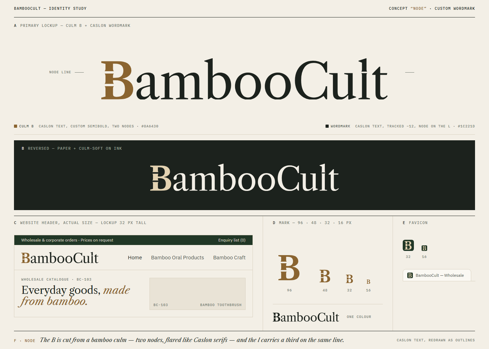
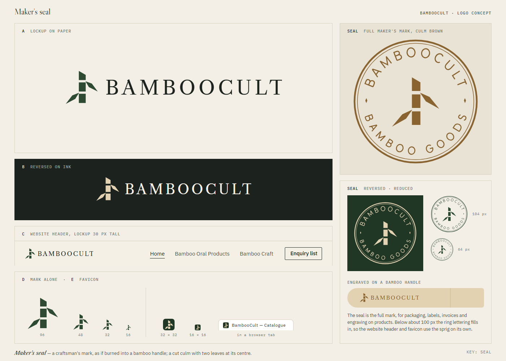
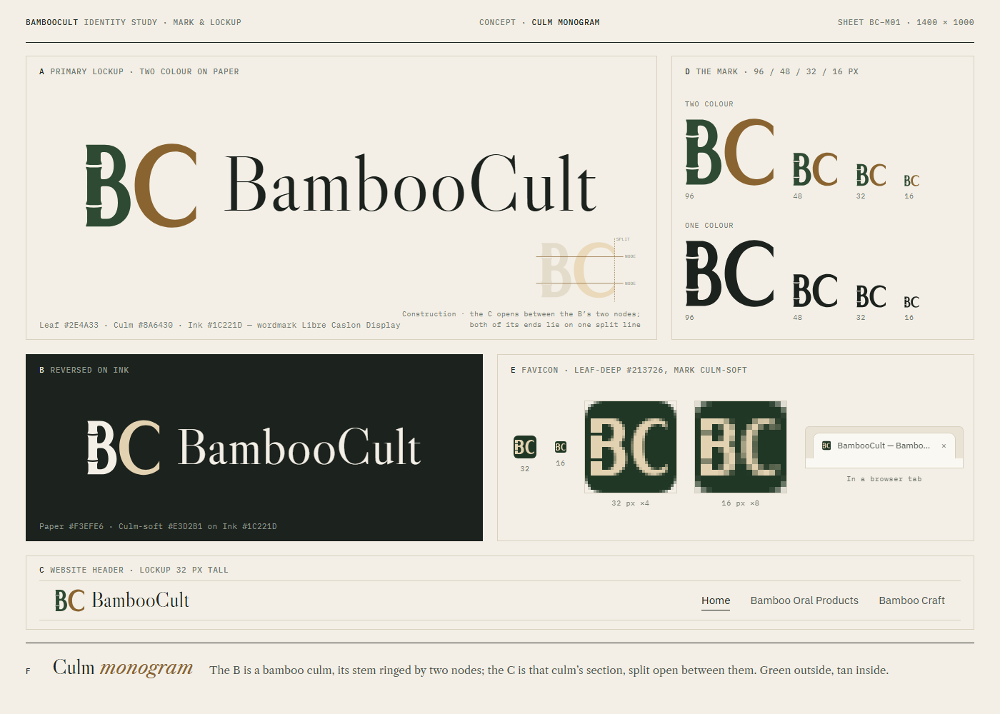
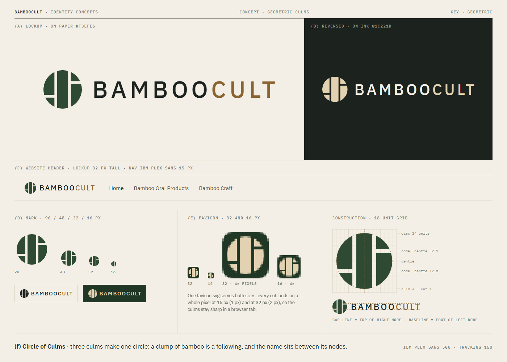

One word, set in Caslon, cut from a culm.
“BambooCult” is Libre Caslon Text redrawn as outlines, so the logo needs no web font. The capital B is drawn as a length of bamboo: its stem is split by two nodes whose ends flare like Caslon’s own bracketed serifs. Everything else is calm, carefully spaced type. Always use these outlined files, never live-typed text.
The favicon is a separate cut of the B fitted to the 32-pixel grid: cap line, baseline, stem edges and both node gaps land on whole pixels at 32 px and again at 16 px. The mark is the B exactly as it appears in the lockup; use it alone only where the full name is already present, and at 48 px or larger.
Clear space: half the height, all round
Keep a margin of at least half the logo’s height (H) free on every side: at 24 px tall that is 12 px; in print at 10 mm tall it is 5 mm. Nothing else, text, rules, photographs or the page edge, comes inside it. The mark alone keeps a quarter of its height.
Scale the whole lockup together, never the B and the word separately, and never stretch, rotate, outline, shadow or recolour it beyond the three versions above.
| File | Use it for | Notes |
|---|---|---|
brand/logo.svg | Light backgrounds: documents, print, PDFs, design tools | Fixed colours, viewBox 0 0 579.73 84 |
brand/logo-reversed.svg | Dark backgrounds, photographs | Same drawing in paper and culm-soft |
brand/logo-one-colour.svg | Stamps, laser engraving, invoices, one-colour print | All ink; print in any single colour |
brand/logo-inline.svg | The website only: inlined in the header and footer | B follows --bc-accent, the rest currentColor |
brand/logo-1600.png | WhatsApp profile, email signatures, Word documents | 1600 × 232 px, transparent |
brand/mark.svg | The B alone: avatars, packaging, engraving | Square viewBox, culm |
favicon.svg · favicon.ico · apple-touch-icon.png | Browser tab, bookmarks, phone home screen | Stay in the site root |








The concept sheets show the drawings as reviewed. The final Node wordmark differs from its sheet in three details: the l of Cult is plain, the B’s serifs are bracketed to match its node flares, and the favicon was re-fitted to the 32-pixel grid.